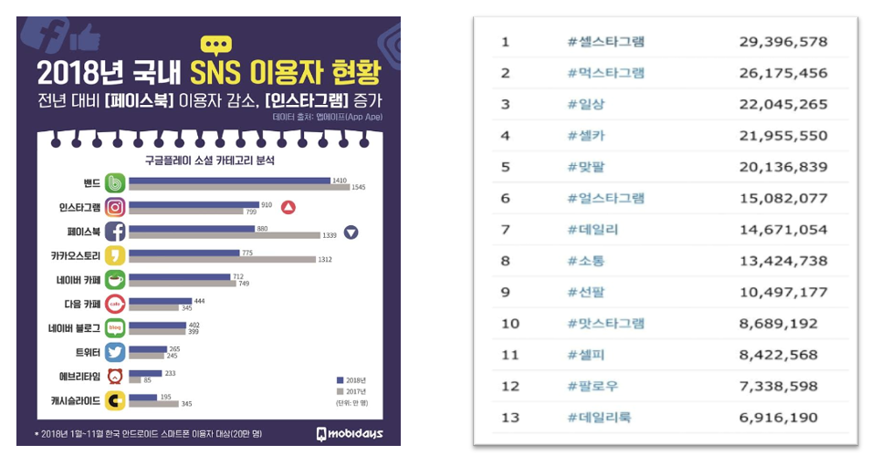
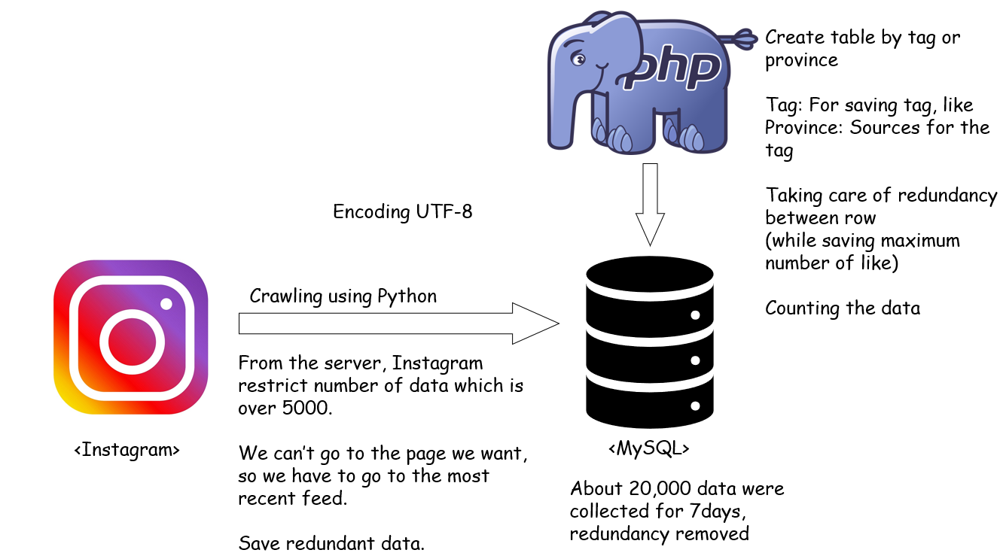
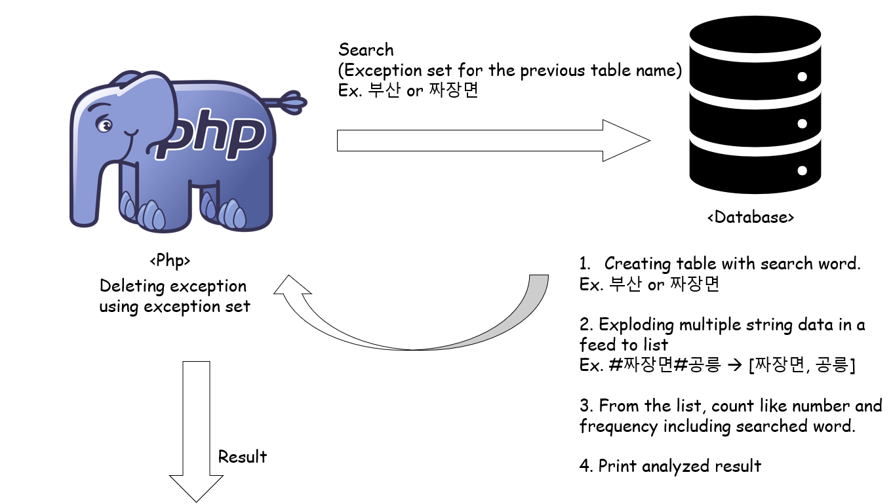
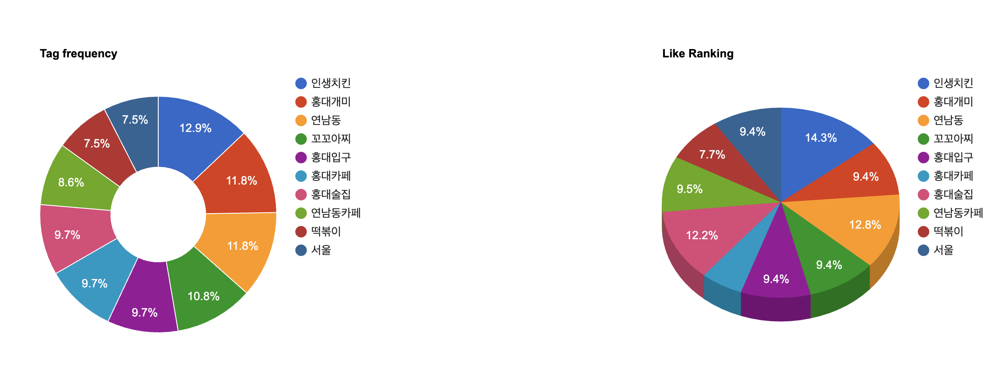
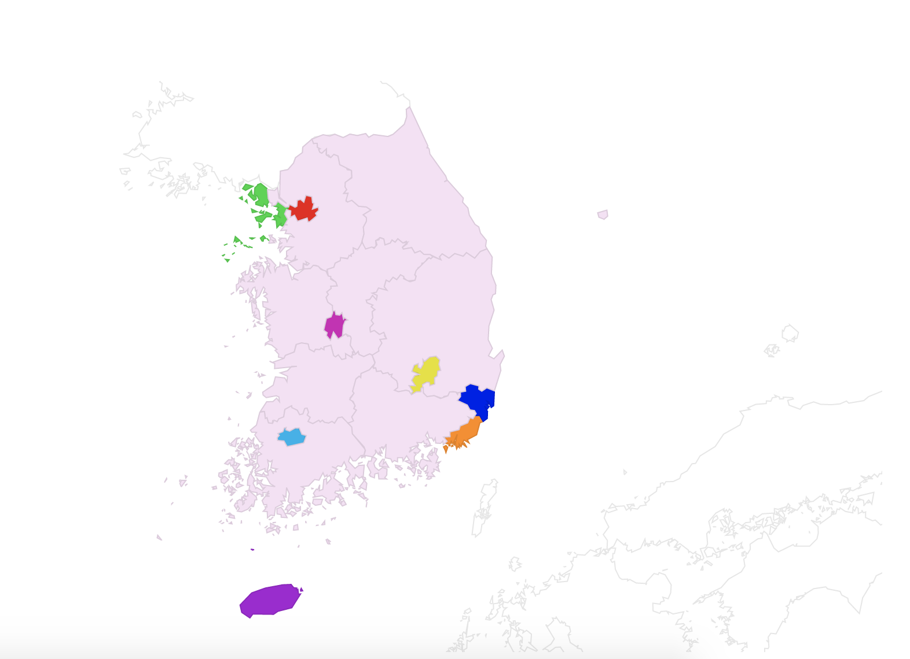

#About Food Detector

|
Food Detector is a 'Food Recommendation' system which is using Instagram tag.
< Reason for making >
The reason why we made this is finding real tasty restaurant. We usually search many restaurants on the
Internet for getting recommendation. However, on the internet, there are many restaurants which are not
real tasty restaurants but self promotion. So, we want to find out the real tasty restaurants that the public
really liked.
< Using Instagram >
For obtaining public opinion, we thought using SNS is good for our intention. Among many SNS, especially
Instagram is appropriate for finding data. Because Instagram users are increasing, and they post a lot of
contents related to restaurants.

< Why we use #존맛 >
The most frequent tag related to food is #먹스타그램. However, this tag are not related to specific taste.
So, we had outcome of unrelated result. Therefore, we used #존맛, because it shows us result related to the
taste. Even though this is a slang in SNS, it is the most widely used category tag to show the taste.
|
#Data Preprocessing

#Data Analysis

#Result


Top